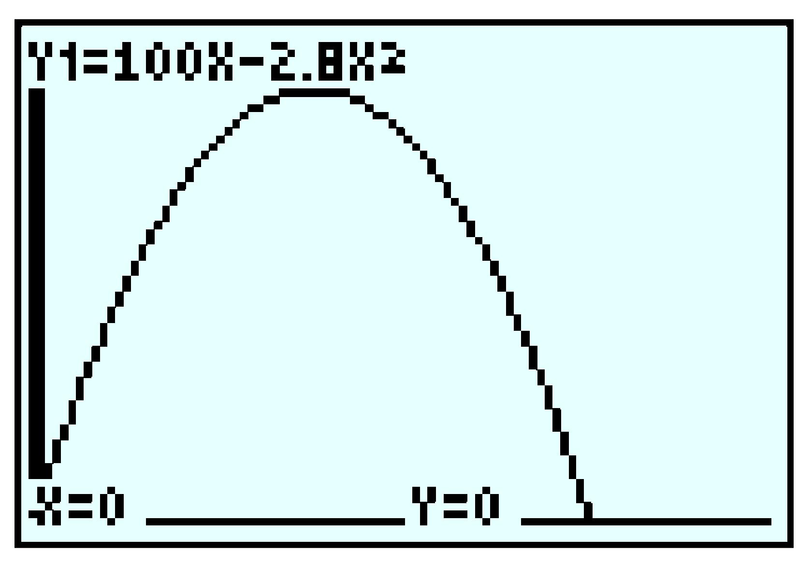
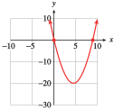
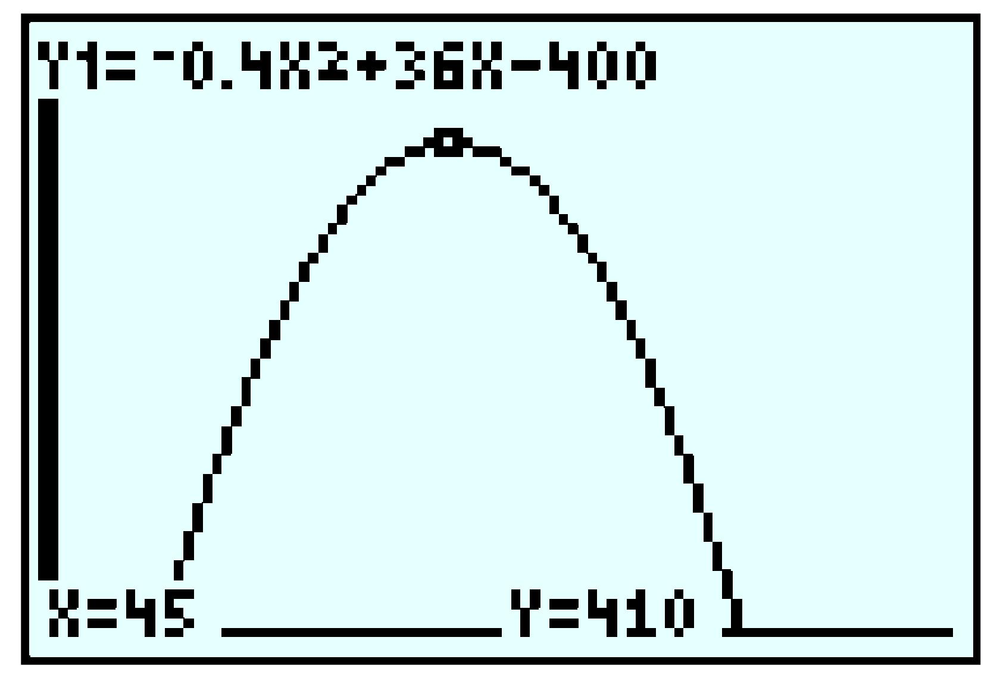
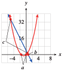
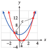

Section 6.5 Chapter Summary and Review
¶Subsection 6.5.1 Key Concepts
A quadratic function has the form \(f (x) = ax2 + bx + c\text{,}\) where \(a\text{,}\) \(b\text{,}\) and \(c\) are constants and \(a\) is not equal to zero.
Zero-Factor Principle.
The product of two factors equals zero if and only if one or both of the factors equals zero. In symbols,
\begin{equation*} ab=0 ~~\text{ if and only if }~~ a=0 ~~\text{ or }~~ b=0 \end{equation*}The \(x\)-intercepts of the graph of \(y = f (x)\) are the solutions of the equation \(f (x) = 0\text{.}\)
-
A quadratic equation written as \(ax^2 +bx+c=0\) is in standard form.
A quadratic equation written as \(a(x - r_1 )(x - r_2)=0\) is in factored form.
To Solve a Quadratic Equation by Factoring.
- Write the equation in standard form.
- Factor the left side of the equation.
- Apply the zero-factor principle: Set each factor equal to zero.
- Solve each equation. There are two solutions (which may be equal).
Every quadratic equation has two solutions, which may be the same.
The value of the constant \(a\) in the factored form of a quadratic equation does not affect the solutions.
Each solution of a quadratic equation corresponds to a factor in the factored form.
An equation is called quadratic in form if we can use a substitution to write it as \(au^2 + bu + c = 0\text{,}\) where \(u\) stands for an algebraic expression.
-
The square of the binomial is a quadratic trinomial,
\begin{equation*} (x+p)^2 =x^2 +2px+p^2 \end{equation*} To Solve a Quadratic Equation by Completing the Square.
Write the equation in standard form.
Divide both sides of the equation by the coefficient of the quadratic term, and subtract the constant term from both sides.
-
Complete the square on the left side:
- Multiply the coefficient of the first-degree term by one-half, then square the result.
- Add the value obtained in (a) to both sides of the equation.
Write the left side of the equation as the square of a binomial. Simplify the right side.
Use extraction of roots to finish the solution.
The Quadratic Formula.
The solutions of the equation \(ax^2 + bx + c = 0\text{, }~~~ a \ne 0\text{,}\) are
\begin{equation*} \blert{x=\frac{-b \pm \sqrt{b^2 - 4ac}}{2a}} \end{equation*}We have four methods for solving quadratic equations: extracting roots, factoring, completing the square, and using the quadratic formula. The first two methods are faster, but they do not work on all equations. The last two methods work on any quadratic equation.
The graph of a quadratic function \(f (x) = ax^2 + bx + c\) is called a parabola. The values of the constants \(a\text{,}\) \(b\text{,}\) and \(c\) determine the location and orientation of the parabola.
-
For the graph of \(y = ax^2 + bx + c\text{,}\) the \(x\)-coordinate of the vertex is \(x_v = \dfrac{-b}{2a}\text{.}\)
To find the \(y\)-coordinate of the vertex, we substitute \(x_v\) into the formula for the parabola.
The graph of the quadratic function \(y = ax^2 + bx + c\) may have two, one, or no \(x\)-intercepts, according to the number of distinct real-valued solutions of the equation \(ax^2 + bx + c = 0\text{.}\)
The Discriminant.
The discriminant of a quadratic equation is \(D = b^2 - 4ac\text{.}\)
- If \(D \gt 0\text{,}\) there are two unequal real solutions.
- If \(D = 0\text{,}\) there is one real solution of multiplicity two.
- If \(D \lt 0\text{,}\) there are two complex solutions.
To Graph the Quadratic Function \(f(x) = ax^2 + bx + c\text{:}\).
Determine whether the parabola opens upward (if \(a \gt 0\)) or downward (if \(a \lt 0\)).
-
Locate the vertex of the parabola.
The \(x\)-coordinate of the vertex is \(x_v =\dfrac{-b}{2a}\text{.}\)
Find the \(y\)-coordinate of the vertex by substituting \(x_v\) into the equation of the parabola.
Locate the \(x\)-intercepts (if any) by setting \(y = 0\) and solving for \(x\text{.}\)
Locate the \(y\)-intercept by evaluating \(y\) for \(x = 0\text{.}\)
Locate the point symmetric to the \(y\)-intercept across the axis of symmetry.
Quadratic models may arise as the product of two variables.
The maximum or minimum of a quadratic function occurs at the vertex.
Vertex Form for a Quadratic Function.
A quadratic function \(y = ax^2 + bx + c\text{,}\) \(a \ne 0\text{,}\) can be written in the vertex form
\begin{equation*} y = a(x - x_v)^2 + y_v \end{equation*}where the vertex of the graph is \((x_v, y_v)\text{.}\)
We can convert a quadratic equation to vertex form by completing the square.
We can graph a quadratic equation in vertex form using transformations.
A \(2\times 2\) system involving quadratic equations may have one, two, or no solutions.
We can use a graphical technique to solve quadratic inequalities.
To Solve a Quadratic Inequality Algebraically:.
Write the inequality in standard form: One side is \(0\text{,}\) and the other has the form \(ax^2 + bx + c\text{.}\)
Find the \(x\)-intercepts of the graph of \(y = ax^2 + bx + c\) by setting \(y = 0\) and solving for \(x\text{.}\)
Make a rough sketch of the graph, using the sign of \(a\) to determine whether the parabola opens upward or downward.
Decide which intervals on the \(x\)-axis give the correct sign for \(y\text{.}\)
We need three points to determine a parabola.
We can use the method of elimination to find the equation of a parabola through three points.
If we know the vertex of a parabola, we need only one other point to find its equation.
We can use quadratic regression to fit a parabola to a collection of data points.
.
Exercises 6.5.2 Chapter 6 Review Problems
¶For Problems 1-6, solve by factoring.
For Problems 7-8, write a quadratic equation with integer coefficients and with the given solutions.
7.
\(\dfrac{-3}{4} \) and \(8\)
\(4x^2 - 29x - 24 = 0\)
8.
\(\dfrac{5}{3} \) and \(\dfrac{5}{3} \)
For Problems 9-10, graph the equation using the ZDecimal setting. Locate the \(x\)-intercepts and use them to write the quadratic expression in factored form.
9.
\(y = x^2 - 0.6x - 7.2\)
\(y= (x - 3) (x + 2.4)\)
10.
\(y = -x^2 + 0.7x + 2.6\)
For Problems 11-14, use a substitution to solve.
For problems 15-18, solve by completing the square.
For Problems 19-22, solve by using the quadratic formula.
For Problems 23-26, solve the formula for the indicated variable.
27.
In a tennis tournament among \(n\) competitors, \(\dfrac{n(n-1)}{2} \) matches must be played. If the organizers can schedule \(36\) matches, how many players should they invite?
\(9\)
28.
The formula \(S=\dfrac{n(n+1)}{2} \) gives the sum of the first \(n\) positive integers. How many consecutive integers must be added to make a sum of \(91\text{?}\)
29.
Irene wants to enclose two adjacent chicken coops of equal size against the henhouse wall. She has \(66\) feet of chicken wire fencing and would like the total area of the two coops to be \(360\) square feet. What should the dimensions of the chicken coops be?
\(10\) ft by \(18\) ft or \(12\) ft by \(15\) ft
30.
The base of an isosceles triangle is one inch shorter than the equal sides, and the altitude of the triangle is \(2\) inches shorter than the equal sides. What is the length of the equal sides?
31.
A car traveling at \(50\) feet per second (about \(34\) miles per hour) can stop in \(2.5\) seconds after applying the brakes hard. The distance the car travels, in feet, \(t\) seconds after applying the brakes is \(d = 50t - 10t^2\text{.}\) How long does it take the car to travel \(40\) feet?
\(1\) sec
32.
You have \(300\) feet of wire fence to mark off a rectangular Christmas tree lot with a center divider, using a brick wall as one side of the lot. If you would like to enclose a total area of \(7500\) square feet, what should be the dimensions of the lot?
33.
The height, \(h\text{,}\) of an object \(t\) seconds after being thrown from ground level is given by
where \(v_0\) is its starting velocity and \(g\) is a constant that depends on gravity. On the Moon, the value of \(g\) is approximately \(5.6\text{.}\) Suppose you hit a golf ball on the Moon with an upward velocity of \(100\) feet per second.
Write an equation for the height of the golf ball \(t\) seconds after you hit it.
-
Graph your equation in the window
\begin{align*} {\text{Xmin}} \amp = 0 \amp\amp {\text{Xmax}} = 47\\ {\text{Ymin}} \amp = 0 \amp\amp {\text{Ymax}} = 1000 \end{align*} Use the Trace to estimate the maximum height the golf ball reaches.
Use your equation to calculate when the golf ball will reach a height of \(880\) feet.
\(h = 100t - 2.8t^2\)
- 
\(893\) ft
\(15\frac{5}{7}\) sec on the way up and \(20\) sec on the way down
34.
An acrobat is catapulted into the air from a springboard at ground level. Her height, \(h\text{,}\) in meters is given by the formula
where \(t\) is the time in seconds from launch. Use your calculator to graph the acrobat’s height versus time. Use the window
Use the Trace to find the coordinates of the highest point on the graph. When does the acrobat reach her maximum height, and what is that height?
Use the formula to find the height of the acrobat after \(2.4\) seconds.
Use the Trace to verify your answer to part (b). Find another time when the acrobat is at the same height.
Use the formula to find two times when the acrobat is at a height of \(6.125\) meters. Verify your answers on the graph.
What are the coordinates of the horizontal intercepts of your graph? What do these points have to do with the acrobat?
For problems 35-36, show that the shaded areas are equal.
35.

\(A_1\) is the area of a square minus the area of two triangles:
36.

For problems 37-46,
Find the coordinates of the vertex and the intercepts.
Sketch the graph.
37.
\(y=\dfrac{1}{2}x^2 \)
Vertex and intercepts are all \((0,0) \text{.}\)

38.
\(y = x^2 - 4\)
39.
\(y= x^2 - 9x \)
Vertex \((\dfrac{9}{2},\dfrac{-81}{4})\text{;}\) \(x\)-intercepts \((9,0)\) and \((0,0)\text{;}\) \(y\)-intercept \((0,0) \)
- 
40.
\(y = -2x^2 - 4x\)
41.
\(y= x^2 + x - 6 \)
Vertex \((\dfrac{-1}{2},\dfrac{-25}{4})\text{;}\) \(x\)-intercepts \((-3,0)\) and \((2,0)\text{;}\) \(y\)-intercept \((0,-6) \)

42.
\(y = x^2 - 3x + 4\)
43.
\(y = 8 - x - 2x^2 \)
Vertex \((\dfrac{-1}{4},\dfrac{65}{8})\text{;}\) \(x\)-intercepts \(\left(\dfrac{-1 \pm \sqrt{65}}{4} ,0 \right)\text{;}\) \(y\)-intercept \((0,8) \)

44.
\(y = -2x^2 + x - 4\)
45.
\(y = x^2 - x - 9 \)
Vertex \((\dfrac{1}{2},\dfrac{-37}{4})\text{;}\) \(x\)-intercepts \(\left(\dfrac{1 \pm \sqrt{37}}{2} ,0 \right)\text{;}\) \(y\)-intercept \((0,-9) \)

46.
\(y = -x^2 + 2x + 4\)
For problems 47-48, use the discriminant to determine how many \(x\)-intercepts the graph has.
47.
\(y = -2x^2 + 5x - 1\)
Two
48.
\(y = -12 - 3x + 4x^2\)
For Problems 49-52, use the discriminant to determine the nature of the solution of each equation.
53.
The total profit Kiyoshi makes from producing and selling \(x\) floral arrangements is
How many floral arrangements should Kiyoshi produce and sell to maximize his profit? What is his maximum profit?
Verify your answers on a graph.
\(45\text{;}\) $\(410\)
- 
54.
Lightning does about one billion dollars damage annually in the United States and kills 85 people. To study lightning, meteorologists fire small rockets at passing thunderclouds to induce lightning bolts. The rocket trails a thin copper wire that is vaporized by the lightning, leaving a plasma channel that carries the current to the grounding point. The rocket boosts the wire to a height of \(250\) meters, and \(t\) seconds later, its height is given in meters by
When does the rocket reach its maximum height? What is the maximum height?
Verify your answers on a graph.
55.
A beekeeper has beehives distributed over \(60\) square miles of pastureland. When she places \(4\) hives per square mile, each hive produces about \(32\) pints of honey per year. For each additional hive per square mile, honey production drops by \(4\) pints per hive.
Write a function for the total production of honey, in pints, in terms of the number of additional hives per square mile.
How many additional hives per square mile should the beekeeper install in order to maximize honey production?
\(y = 60 (4 + x) (32 - 4x)\)
\(2\)
56.
A small company manufactures radios. When it charges $\(20\) for a radio, it sells \(500\) radios per month. For each dollar the price is increased, \(10\) fewer radios are sold per month.
Write a function for the monthly revenue in terms of the price increase over $\(20\text{.}\)
What should the company charge for a radio in order to maximize its monthly revenue?
For Problems 57–60,
Find all values of \(x\) for which \(f(x) = 0\text{.}\)
Find all values of \(x\) for which \(g(x) = 0\text{.}\)
Find all values of \(x\) for which \(f(x) = g(x) \text{.}\)
Graph each pair of functions in the same window, then sketch the graph on paper. Illustrate your answers to (a)–(c) as points on the graph.
57.
\(f (x) = 2x^2 + 3x\text{,}\) \(~g(x) = 5 - 6x\)
\(0, ~\dfrac{-3}{2} \)
\(\dfrac{5}{6} \)
\(-5, ~\dfrac{1}{2} \)
- 
58.
\(f (x) =3x^2 - 6x\text{,}\) \(~g(x) = 8 + 4x\)
59.
\(f (x) = 2x^2 -2x\text{,}\) \(~g(x) = x^2+3\)
\(0, ~1 \)
None
\(-1, ~3 \)
- 
60.
\(f (x) =x^2 + 4x + 6\text{,}\) \(~g(x) = 4-x^2\)
For Problems 61-66, solve the inequality algebraically, and give your answers in interval notation. Verify your solutions by graphing.


67.
The Sub Station sells \(220 - \dfrac{1}{4}p\) submarine sandwiches at lunchtime if it sells them at \(p\) cents each.
Write a function for the Sub Station's daily revenue in terms of \(p\text{.}\)
What range of prices can the Sub Station charge if it wants to keep its daily revenue from subs over $\(480\text{?}\) (Remember to convert $\(480\) to cents.)
\(R=p \left(220-\dfrac{1}{4}p \right) \)
Between $\(4.00\) and $\(4.80\)
68.
When it charges \(p\) dollars for an electric screwdriver, Handy Hardware will sell \(30 - \dfrac{1}{2}p\) screwdrivers per month.
Write a function in terms of \(p\) for Handy Hardware's monthly revenue from electric screwdrivers.
How much should Handy charge per screwdriver if it wants the monthly revenue from the screwdrivers to be over $\(400\text{?}\)
For Problems 69-76, solve the system algebraically, and verify your solution with a graph.
69.
\(\begin{aligned}[t] y+x^2 \amp = 4 \\ y \amp = 3 \end{aligned}\)
\((1, 3)\text{,}\) \(~(-1, 3)\)
70.
\(\begin{aligned}[t] y \amp = 3-x^2 \\ 5x+y \amp = 7 \end{aligned}\)
71.
\(\begin{aligned}[t] y \amp = x^2-5 \\ y \amp = 4x \end{aligned}\)
\((-1, -4)\text{,}\) \(~(5, 20)\)
72.
\(\begin{aligned}[t] y \amp = x^2 -2x+1 \\ y \amp = 3-x \end{aligned}\)
73.
\(\begin{aligned}[t] y \amp = x^2-6x+20 \\ y \amp = 2x^2-2x-25 \end{aligned}\)
\((-9, 155)\text{,}\) \(~(5, 15)\)

74.
\(\begin{aligned}[t] y \amp = x^2 -5x-28 \\ y \amp = -x^2+4x+28 \end{aligned}\)
75.
\(\begin{aligned}[t] y \amp = \frac{1}{2} x^2-\frac{3}{2}x \\ y \amp = -\frac{1}{2}x^2 +\frac{1}{2}x+3 \end{aligned}\)
\((-1, 2)\text{,}\) \(~(3, 0)\)
76.
\(\begin{aligned}[t] y \amp = 2x^2 +5x-3 \\ y \amp = x^2+4x-1 \end{aligned}\)
77.
Find values of \(a\text{,}\) \(b\text{,}\) and \(c\) so that the graph of the parabola \(y = ax^2 + bx + c\) contains the points \((-1,-4)\text{,}\) \((0, -6)\text{,}\) and \((4, 6)\text{.}\)
\(a=1\text{,}\) \(~b=-1\text{,}\) \(~c=-6\)
78.
Find values of \(a\text{,}\) \(b\text{,}\) and \(c\) so that the graph of the parabola \(y = ax^2 + bx + c\) contains the points \((0,-2)\text{,}\) \((-6,1)\text{,}\) and \((4, 6)\text{.}\)
Plot the data points and sketch the graph on the grid.
79.
Find a parabola that fits the following data points.
| \(x\) | \(-8\) | \(-4\) | \(2\) | \(4\) |
| \(y\) | \(10\) | \(18\) | \(0\) | \(-14\) |
\(p(x)=\dfrac{-1}{2}x^2-4x+10 \)
80.
Find a parabola that fits the following data points.
| \(x\) | \(-3\) | \(0\) | \(2\) | \(4\) |
| \(y\) | \(-46\) | \(8\) | \(-6\) | \(-60\) |
81.
Find the equation for a parabola that has a vertex of \((15,-6)\) and passes through the point \((3, 22.8)\text{.}\)
\(y = 0.2 (x - 15)^2 -6\)
82.
Find the equation for a parabola that has a vertex of \((-3,-8)\) and passes through the point \((6, 12.25)\text{.}\)
For Problems 83–86,
Write the equation in vertex form.
Use transformations to sketch the graph.

87.
The height of a cannonball was observed at \(0.2\)-second intervals after the cannon was fired, and the data were recorded in the table.
| Time (seconds) | \(0.2\) | \(0.4\) | \(0.6\) | \(0.8\) | \(1.0\) | \(1.2\) | \(1.4\) | \(1.6\) | \(1.8\) | \(2.0\) |
| Height (meters) | \(10.2\) | \(19.2\) | \(27.8\) | \(35.9\) | \(43.7\) | \(51.1\) | \(58.1\) | \(64.7\) | \(71.0\) | \(76.8\) |
Find the equation of the least-squares regression line for height in terms of time.
Use the linear regression equation to predict the height of the cannonball at \(3\) seconds and at \(4\) seconds after it was fired.
Make a scatterplot of the data and draw the regression line on the same axes.
Find the quadratic regression equation for height in terms of time.
Use the quadratic regression equation to predict the height of the cannonball at \(3\) seconds and at \(4\) seconds after it was fired.
Draw the quadratic regression curve on the graph from part (c).
Which model is more appropriate for the height of the cannonball, linear or quadratic? Why?
\(h = 36.98t + 5.17\)
\(116.1\) m, \(~153.1\) m

\(h= -4.858t^2 + 47.67t + 0.89\)
\(100.2\) m, \(~113.9\) m

Quadratic: Gravity will slow the cannonball, giving the graph a concave down shape.
88.
Max took a sequence of photographs of an explosion spaced at equal time intervals. From the photographs, he was able to estimate the height and vertical velocity of some debris from the explosion, as shown in the table. (Negative velocities indicate that the debris is falling back to Earth.)
| Velocity (meters/second) |
\(67\) | \(47\) | \(27\) | \(8\) | \(-12\) | \(-31\) |
| Height (meters) |
\(8\) | \(122\) | \(196\) | \(232\) | \(228\) | \(185\) |
Enter the data into your calculator and create a scatterplot. Fit a quadratic regression equation to the data, then graph the equation on the scatterplot.
Use your regression equation to find the vertex of the parabola. What do the coordinates represent, in terms of the problem? What should the velocity of the debris be at the maximum height of the debris?